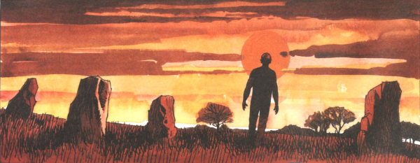

This takes the idea of endless summers of youth in a green and pleasant land of a time gone by - the sort of thing that comes to life in The Railway Children or Swallows & Amazons - and neatly subverts it by focussing on elements of folkloric horror.
Art by Steve Parkhouse
| Story Title | Parts | Pages | w indicates a wraparound coverCovers | Year(s) | Issues | Writer | Artist | Colourist | Letterer |
|---|---|---|---|---|---|---|---|---|---|
No supertitle.Summer Magic | 7 | 36 | 0 | 1988 | 571-577 | Alan McKenzie | John Ridgway | [b&w] | Annie Parkhouse |
No supertitle. Subtitled: "A Luke Kirby Adventure".A Winter's Tale | 1 | 8 | 0 | 1988 | WS1 | Alan McKenzie | Graham Higgins | Pages 3‑4 in colour. <-- | Steve Potter |
| The Dark Path | 1 | 7 | 0 | 1990 | SFS13 | Alan McKenzie | Tim Perkins John Ridgwayvarious | <-- | Annie Parkhouse |
| The Night Walker | 13 | 79 | 804: John Ridgway 1 | 1992 | 800-812 | Alan McKenzie | John Ridgway | <-- | Annie Parkhouse |
| Trick or Treat | 1 | 8 | 0 | 1993 | 2KYB'94 | Alan McKenzie | John Ridgway | Pages 3‑4 in colour. <-- | Annie Parkhouse |
| Sympathy for the Devil: Prologue | 2 | 10 | 0 | 1993 | 850-851 | Alan McKenzie | John Ridgway | Gina Hart | Gary Gilbert |
| Sympathy for the Devil | 10 | 60 | 0 | 1994 | 873-877, 884-888 | Alan McKenzie | Steve Parkhouse | Nick Abadzis, Gina Hart various | Steve Parkhouse: 1,4‑5 Annie Parkhouse: 2‑3,6‑10 various |
| The Old Straight Track | 10 | + 1 credit pages60 | 0 | 1995 | 954-963 | Alan McKenzie | Steve Parkhouse | <-- | Steve Parkhouse |
| The Price | 1 | 8 | 0 | 1995 | 972 | Alan McKenzie | John Ridgway | Tim Perkins | Ellie de Ville |
| >> Posters / Teasers << | |||||||||
| The Night Walker | 1 | 1 | 0 | 1992 | 798 | editorial | John Ridgway | <-- | n/a |
| year | episodes | pages |
| 1981 | 0 | 0 |
| 1982 | 0 | 0 |
| 1983 | 0 | 0 |
| 1984 | 0 | 0 |
| 1985 | 0 | 0 |
| 1986 | 0 | 0 |
| 1987 | 0 | 0 |
| 1988 | 8 | 44 |
| 1989 | 0 | 0 |
| 1990 | 1 | 7 |
| 1991 | 0 | 0 |
| 1992 | 13 | 79 |
| 1993 | 3 | 18 |
| 1994 | 10 | 60 |
| 1995 | 11 | 68 |
| 1996 | 0 | 0 |
| 1997 | 0 | 0 |
| 1998 | 0 | 0 |
| 1999 | 0 | 0 |
| 2000 | 0 | 0 |
| 2001 | 0 | 0 |
| 2002 | 0 | 0 |
Comic strip data (excludes other content):